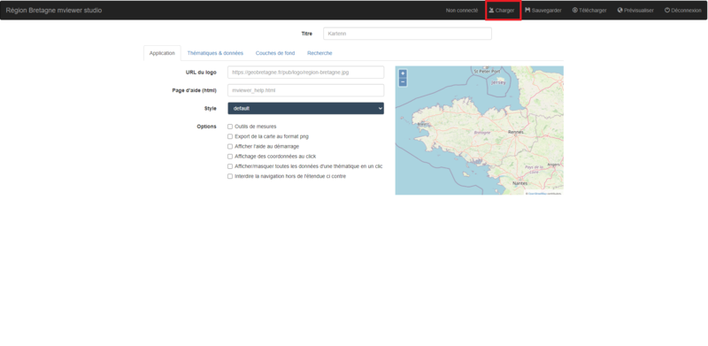
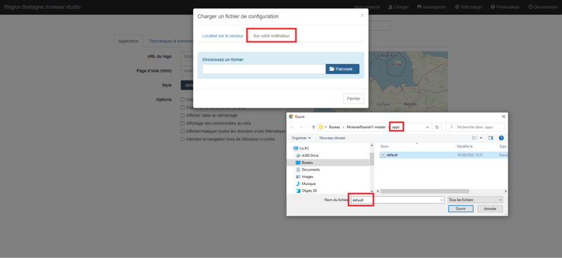
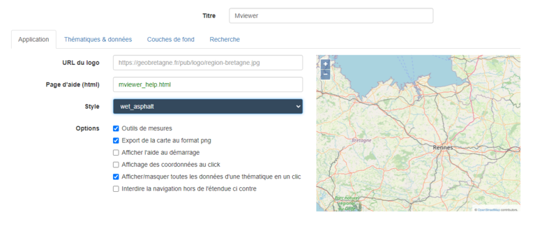

Introduction
Mviewer est une application cartographique initiée et développée par la Région Bretagne, sous le nom de Kartenn (carte en breton). Le code source de cette application est librement réutilisable depuis 2014. De nombreuses collectivités mais également des entreprises, le secteur de la recherche et de l’enseignement utilisent librement cette application et participent à son évolution.
Installation
Lien du github de l'application Mviewer
- Appuyer sur le bouton déroulant « Code » (étape 1)
- Appuyer sur le bouton Download ZIP (étape 2)

Mise en place
Après avoir télécharger le ZIP de « mviewer-master ».
- Il faudra le décompresser sur le passer dans le dossier « www » dans le dossier WampServer.(Étape 1)

Paramétrage
Paramétrage du couche dans l'application Mviewer
Pour paramétrer une couche, il faut accéder au dossier apps qui contient un fichier default.xml, c'est dans ce fichier qu'on pourra changer les changées les paramètres des couches.
Ensemble des paramètres choisi dois ce trouver dans une balise "<"layer">"
3 paramètres sont obligatoires a mettre dans cette balise :
- name: paramètre de type texte qui précise le nom de la couche.
- url: paramètre de type URL (URL du service web).
- id: paramètre de type texte qui renseigne l’identifiant technique de la couche côté serveur WMS ou WFS.
Paramètre pour gérer l'affichage de la couche
- visible: Booléen stipulant si la couche est visible par défaut.
- opacity: Opacité de la couche (1 par défaut).
- style: Style(s) de la couche. Si plusieurs styles , utiliser la virgule comme séparateur. Si la couche est de type wms, il faut faire référence à un style sld. Si la couche est de type geojson, il faut faire référence à un style définit dans lib/featurestyles.js. Si la couche est de type customlayer, le style n’est pas défini ici.
- sld: Lien vers un SLD stocké sur le web. Dans ce fichier SLD, la balise sld:Name contenue dans sld:NamedLayer doit être égale au nom de la couche sans mention du namespace. Exemple
- index: Ordre d’affichage de la couche sur la carte et dans la légende au démarrage. Les couches avec ce paramètre seront visibles sous les toplayers. Les couches sans ce paramètre ni toplayer seront affichées dans l’ordre d’écriture dans le XML.
Paramètre pour gérer le filtre attributaire(liste déroulante) des couches WMS
- attributefilter: Booléen précisant si on active la sélection attributaire par menu déroulant.
- attributefield: Nom du champ à utiliser avec le contrôle attributefilter.
- attributevalues: Valeurs de la sélection attributaire séparées par des virgules.
- attributelabel: Texte à afficher pour chaque atttribut de la liste déroulante associée.
Si vous trouvez que paramétrer des couches dans le fichier XML soit trop compliquez pour vous. Les développeurs ont tout prévu, une application existe pour paramétrer plus facilement l'application.
Mviewer Studio
Image: Menu Mviewer studio
Image: Charger le document XML default Mviewer studio
Dans premier temps, il faut charger le fichier default.xml qui se trouve dans le dossier app de votre dossier Mviewer.
Paramétrage du document default
- Application: Dans cet onglet, on paramètre le style de page et d'autre option rajouter en plus a l'application.
- Thématique & données : Gestionnaire des couches et paramétrage des couches (filtres...etc).
- Couche de fond:17 Choix de fonds de couches.
- Recherche: Système de recherche (base adresse Nationale, Géoportail)